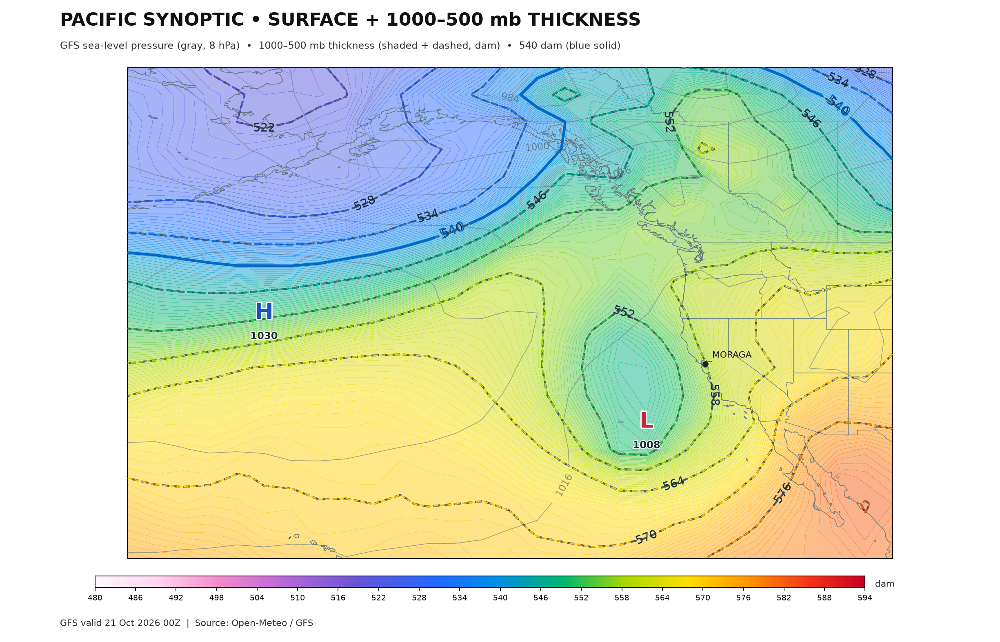

Western North America · Operational maps and links to AI model guidance
Actual generated sea-level pressure and 1000–500 hPa thickness, with Moraga marked. This is the latest published forecast-valid composite, not the selected forecast-hour map. Precipitation overlay is not yet available.

For actual precipitation, sea-level pressure and thickness maps—including AI guidance—open the original model viewers below. These are external model pages, not Observatory-generated composites.
500-hPa heights and vorticity show troughs and upper-level disturbances. 850-hPa temperature and wind show lower-atmosphere air masses. Jet-stream winds indicate upper-level flow. IVT approximates moisture transport, not rainfall amounts.
AI forecast status: ECMWF AIFS and NOAA AIGFS are reserved as distinct model sources; neither is substituted with operational GFS imagery. The published GFS composite above includes MSLP and thickness; precipitation overlay and AI grids still require separate verified collectors. Existing GFS maps below remain useful while those collectors are developed.
Images are generated by the Observatory's existing GFS workflow. Forecast valid time and model initialization must be checked against the published source metadata; file names alone do not certify freshness.